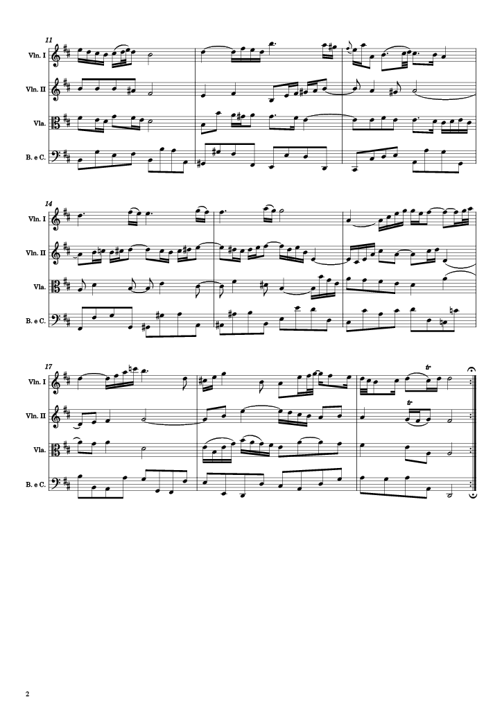

Audio Similarity and Transcription
Generating a Similarity Matrix
Below is a similarity matrix of the chromagram pitch classes for the following ten tracks in the dataset: [tracks here]
[similarity by genre. include how they were classified]
[discussion]
Automatic Transcription
[view both scores, discuss differences.] Below is the output of an automatic transcription done using Sonic Visualiser plugins (midi score, pdf).
Recall/compare with the score from week 2:
 |
 |
The automatic transcription does not reflect the original score at all. Key signatures, parts, voicing, pitches and more do not correspond to the piece. [It may be a new piece altogether!] The piano roll of this transcription can be seen below; compare with that of week 4.